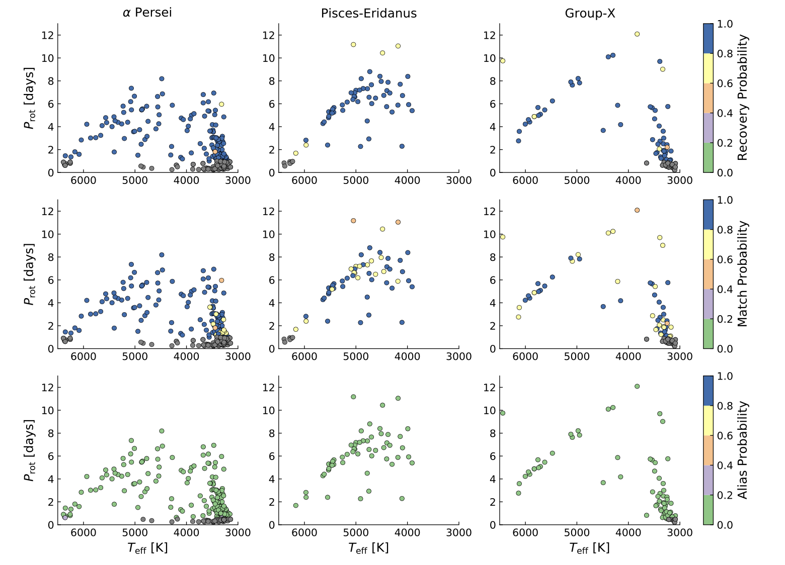
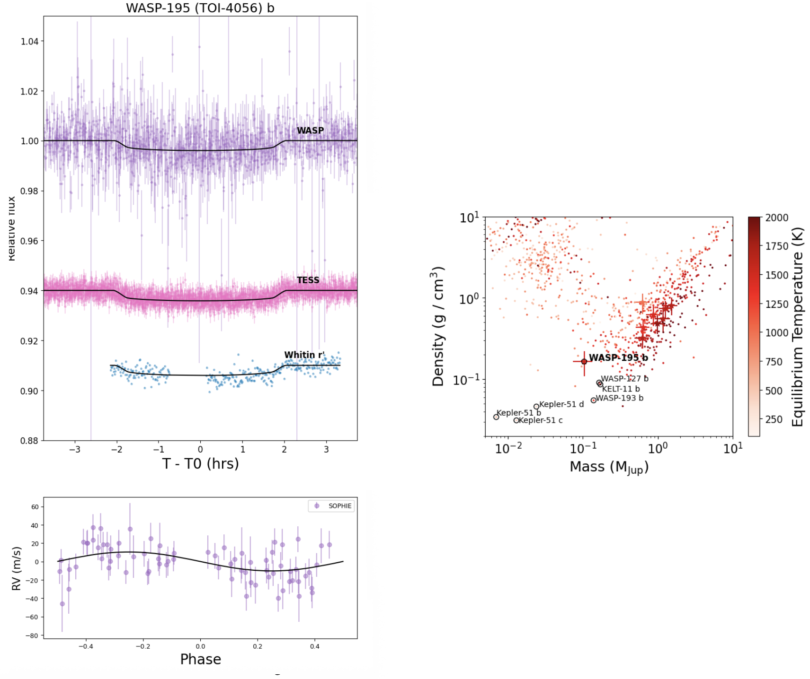
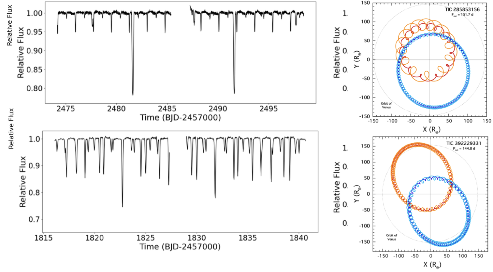

Welcome TESS followers to our latest news bulletin!
This week, we are looking at three recent papers from the archive. Enjoy!
First, we highlight a study evaluating the accuracy, reliability, and completeness of TESS-derived stellar rotation period measurements by comparing them with measurements from the K2 mission. The authors cross-matched a large number of stars observed by both missions to quantify the empirical uncertainties in TESS rotation measurements. Their findings provide guidelines to optimize studies focusing on stellar rotation, young stellar associations, and gyrochronology.
Next, we outline a paper describing a “swarm of wasps” – nine transiting planets orbiting FGK stars originally identified as candidates by the WASP survey. The authors confirmed the candidates through extensive follow-up observations including space-based photometry from TESS and ground-based radial velocity measurements. These discoveries contribute to the growing population of hot Jupiters and expand our knowledge of these giant planets orbiting extremely close (~days) to their host stars. These relatively rare planets provide crucial insights into planetary migration mechanisms and formation history.
The third paper presents the discovery of two new quadruple star systems, TIC 285853156 and TIC 392229331, each consisting of two gravitationally-bound eclipsing binary stars with remarkably compact configurations. At the time of writing, these systems have the second and third shortest outer orbital periods known (145 days and 152 days), following only BU Canis Minoris (122 days). Both systems would fit within the orbit of Venus in our solar system, highlighting their extraordinary compactness.
Quantifying the Limits of TESS Stellar Rotation Measurements with the K2-TESS Overlap (Boyle et al. 2025) :
Boyle et al. (2025) assessed TESS-derived rotation measurements by comparing them with a benchmark sample of approximately 23,000 stars also observed by the K2 mission, which had longer observation windows. Their analysis revealed that TESS rotation period uncertainties are on the order of ~1-2% for rotators with periods under 5 days, and gradually increase to about 6% for periods shorter than ~12 days. The authors found that ~80% of the TESS measurements matched the K2 benchmark for stars with rotation periods shorter than 10 days, are ~10% too short in the range of ~10-14 days, and the completeness and reliability of the measurements decreased significantly for periods longer than 12 days. Boyle et al. (2025) show that the measured periods are ~70-80% reliable for periods shorter than ~10 days without imposing any quality cuts. The signal quality significantly impacts reliability, such that adopting a Lomb-Scargle power threshold of >0.2 improves the reliability for periods below 10 days to > 90%, although it removes more than half of the potential detections. The authors argue that combining multiple TESS observation sectors before measuring rotation rates does improve the precision for periods in the range of ~6-8 days, but caution that the improvement is comparable to that of first measuring the per-sector periods and then combining them. When applied to young star clusters such as α Per, Pisces-Eridanus, and Group X, the authors’ framework showed most measurements had 80-100% reliability, though longer-period rotators in Pisces-Eridanus showed lower reliability (40-60%). Boyle et al. (2025) found that maximum completeness for TESS rotation measurements is approximately 80%, and note that about 20% of rotation periods for stars with periods under 10 days cannot be recovered primarily because they fall into low reliability categories.
A Swarm of WASP Planets: Nine giant planets identified by the WASP survey (Schanche et al. 2025) :
Schanche et al. (2025) present a detailed analysis of the nine hot Jupiters WASP-102 b, WASP-116 b, WASP-149 b, WASP-154 b, WASP-155 b, WASP-188 b, WASP-194 b/HAT-P- 71 b, WASP-195 b, and WASP-197 b, utilizing numerous ground- and space-based observations. These include photometric time series from HATNet, KeplerCam, Muscat2, NITES, TESS, TRAPPIST, WASP, and others, radial velocity measurements from SOPHIE, CORALIE, TRES, and PARAS-2, and high-resolution imaging from WIYN, SAI, SOAR, Gemini, and Palomar, to identify nearby companion stars that could contaminate the data. To obtain the physical and orbital properties of the nine systems, the authors performed joint analysis of all available data, including detailed analyses of stellar properties through spectroscopic measurements and SED modeling. Schanche et al. (2025) found that the orbital periods of the nine planets range from 1.3 to 6.6 days, their sizes are between 0.9 and 1.4 Jupiter radii, and their masses between 0.1 and 1.5 Jupiter masses. The authors found no compelling evidence for orbital eccentricity in any of the systems, consistent with the expectation that short-period hot Jupiters typically have circularized orbits, and argue that the planets fit within the known hot Jupiter population trends, with most showing the expected correlation between higher temperatures and larger radii due to atmospheric inflation. The authors note that perhaps most notable among the nine systems is WASP-195 b, which exhibits an unusually low density with a radius of 0.92 Jupiter radii yet a mass of only 0.104 Jupiter masses. Schanche et al. (2025) suggest this puffy planet may be a young sub-Neptune that is still cooling and contracting after formation, potentially undergoing atmospheric mass loss. Altogether, the comprehensive characterization of these planets enhances our demographic understanding of hot Jupiters and provides additional targets for atmospheric studies, with WASP-149 b and WASP-195 b being particularly promising candidates for transmission spectroscopy based on their high Transmission Spectroscopy Metric values of 189 and 153, respectively.
The Discovery of Two Quadruple Star Systems with the Second and Third Shortest Outer Periods (Powell et al. 2025) :
Powell et al. (2025) present the discovery of two highly-compact quadruple stellar systems with a 2+2 hierarchical configuration. Both systems contain two binary stars that produce two distinct sets of eclipses in TESS data following two different periods, as well as significant eclipse timing-variations. The authors combined TESS data with radial velocity measurements from TRES in a comprehensive photometric-dynamical model to obtain complete solutions for both systems and confirm their quadruple nature. Powell et al. (2025) found that TIC 392229331 features two similar binary stars with periods of 1.82 and 2.25 days, both with near-circular orbits and similar masses for the individual components (approximately 2.05M⊙, 1.10M⊙, 1.95M⊙, and 1.15M⊙). The outer orbit has a period of about 145 days and substantial eccentricity of 0.558. The authors found that the system is quite young, with an age of ~100 million years, and relatively metal-rich ([M/H] ~ 0.18). For TIC 285853156, Powell et al. (2025) show that the system contains binaries with periods of 1.77 and 10.0 days, with the former being nearly circular while the latter has an orbital eccentricity of 0.23. The authors found that the TIC 285853156 system is dominated by the G-type primary star of the 10-day binary, the outer period is about 152 days, and the outer eccentricity is ~0.33. The estimated age of TIC 285853156 is about 3.8 billion years. Both systems exhibit remarkable coplanarity, with orbital planes aligned to within ~1-2 degrees, experience rapid apsidal motion, and are long-term dynamically stable. Powell et al. (2025) suggest these quadruples originally formed at much wider separations through an outside-in process, with subsequent dynamical hardening of the outer orbits requiring significant circumquadruple accretion to achieve their present configurations. The discovery of such compact quadruple systems provides valuable insights into the formation mechanisms and evolutionary pathways of multiple stellar systems, which represent important test cases for stellar physics, dynamics, and orbital stability.

Fig. 1: Taken from Boyle et al. (2025). TESS-measured rotation periods in terms of recovery (upper panels), match (middle panels), and alias probability (lower panels) for the three young benchmark associations α Persei (left column), Pisces-Eridanus (middle column), and Group-X (right column).

Fig. 2: Taken from Schanche et al. (2025). Left: Phase-folded lightcurves (upper panel) and radial velocities (lower panel) for the hot Jupiter WASP-195 b. Right: Mass-density-eqiulibrium temperature diagram highlighting the nine studied planets (star symbols).

Fig. 3: Taken from Powell et al. (2025). Left: TESS lightcurves of the two compact eclipsing quadruples TIC 285853156 (upper panel) and TIC 392229331 (lower panel). Right: Corresponding orbital configurations as seen from above.